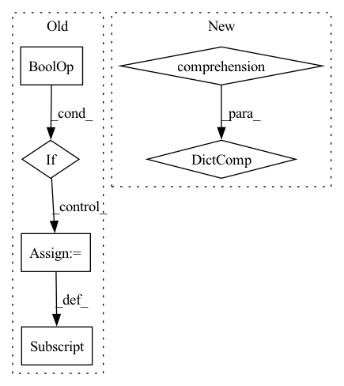

Pattern ID :39689
Before Change
for root, subdirs, files in os.walk(folder, topdown=False):
rel_path = os.path.relpath(root, folder) if (root != folder) else ""
label = os.path.basename(rel_path) if leaf_name_only else rel_path.replace(os.path.sep, "_")
if build_class_idx and not subdirs :
class_to_idx[label] = None
for f in files:
base, ext = os.path.splitext(f)
if ext.lower() in types:After Change
// building class index
unique_labels = set(labels)
sorted_labels = list(sorted(unique_labels, key=natural_key))
class_to_idx = {c: idx for idx, c in enumerate(sorted_labels)}
images_and_targets = zip(filenames, [class_to_idx[l] for l in labels])
if sort:
images_and_targets = sorted(images_and_targets, key=lambda k: natural_key(k[0]))
return images_and_targets, class_to_idxIn pattern: SUPERPATTERN
Frequency: 4
Non-data size: 6
Instances Fragment ID: 112812748
Project Name: alvinwan/nbdt-pytorch-image-models
Commit Name: 1daa303744763c141a137c589aa6068c174aa669
Time: 2020-02-01
Author: rwightman@gmail.com
File Name: timm/data/dataset.py
M Class Name: AnonimousClass
N Class Name: AnonimousClass
M Method Name: find_images_and_targets(5)
N Method Name: find_images_and_targets(5)
M Parent Class:
N Parent Class:
M File Name: timm/data/dataset.py
N File Name: timm/data/dataset.py
M Start Line: 23
M End Line: 52
N Start Line: 23
N End Line: 41
Before Change
new_sample = transform(**new_sample)
// inverse mapping
for source, target in self.transform_targets.items():
if target in new_sample and (source == "input" or source == "target") :
sample[source] = new_sample[target]
elif source in new_sample:
sample[source] = new_sample[source]
return sample
def _read_image(self, image_path: str) -> np.ndarray:After Change
if transform is None:
return sample
valid_sample = {key: value for (key, value) in sample.items() if key in self.__valid_transform_params}
new_sample = transform(**valid_sample)
return new_sample
def _read_image(self, image_path: str) -> np.ndarray: Fragment ID: 112812753
Project Name: eora-ai/torchok
Commit Name: 8eed040a824ef97af24c29a4106f0457205bc490
Time: 2022-04-11
Author: patr982@gmail.com
File Name: src/data/datasets/base.py
M Class Name: ImageDataset
N Class Name: ImageDataset
M Method Name: _apply_transform(3)
N Method Name: _apply_transform(3)
M Parent Class: ABC,Dataset
N Parent Class: ABC,Dataset
M File Name: src/data/datasets/base.py
N File Name: src/data/datasets/base.py
M Start Line: 67
M End Line: 83
N Start Line: 59
N End Line: 61
Before Change
self.model = model
for a, b in permutations(("val", "test")):
if a in data_loaders and b not in data_loaders :
data_loaders[b] = data_loaders[a]
self.data_loaders = data_loaders
if isinstance(stages, (list, tuple)):After Change
if "test" not in data_loader:
data_loader["test"] = data_loader.get("val", data_loader["train"])
self.data_loaders = {
k: build_dataloader(v, seed=seed)
for k, v in data_loader.items()
}
if isinstance(stages, dict):
self.stages = [stages]
else: Fragment ID: 112812757
Project Name: yeliudev/nncore
Commit Name: 591ba982d2f81385c91f619f48fc1fa6068f0d9a
Time: 2021-11-05
Author: yeliudev@outlook.com
File Name: nncore/engine/engine.py
M Class Name: Engine
N Class Name: Engine
M Method Name: __init__(9)
N Method Name: __init__(8)
M Parent Class: object
N Parent Class: object
M File Name: nncore/engine/engine.py
N File Name: nncore/engine/engine.py
M Start Line: 146
M End Line: 161
N Start Line: 147
N End Line: 171